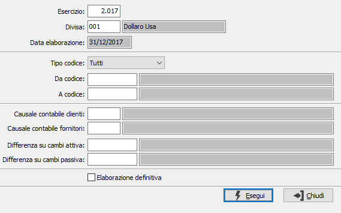

Rilevazione differenza su cambi
La procedura analizza le partite aperte alla data di fine esercizio, calcola il valore alla data di fine esercizio e genera una differenza cambi (attiva o passiva) per adeguare il valore del credito/debito. Per un corretto utilizzo della procedura è necessario aver inserito nei cambi giornalieri il cambio alla fine dell'esercizio.
È possibile effettuare una elaborazione preliminare di prova stampando i dati elaborati dalla procedura.

ESERCIZIO: indicare l'esercizio per il quale deve essere effettuata la rilevazione; viene proposto l'esercizio corrente.
DIVISA: indicare il codice della divisa per cui effettuare la rilevazione; se il campo è lasciato vuoto saranno considerate tutte le divise movimentate. Sul campo sono attive le funzioni di ricerca (F9).
FILTRO CLIENTI/FORNITORI: è possibile definire un range di clienti o fornitori da utilizzare come filtro per l'elaborazione.
CAUSALI CONTABILI: inserire i codici delle causali contabili relative alla rilevazione che saranno utilizzate per la generazione dei movimenti. Sul campo sono attive le funzioni di ricerca (F9).
SOTTOCONTI: inserire i codici dei sottoconti relativi alla rilevazione che saranno utilizzati per la generazione dei movimenti; vengono proposti i sottoconti inseriti negli appositi campi dei codici fissi. Sul campo sono attive le funzioni di ricerca (F9).
ELABORAZIONE DEFINITIVA: consente di effettuare la stampa di un report di controllo (casella vuota) oppure di generare i movimenti contabili (casella con segno di spunta).